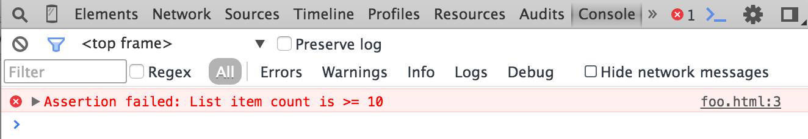
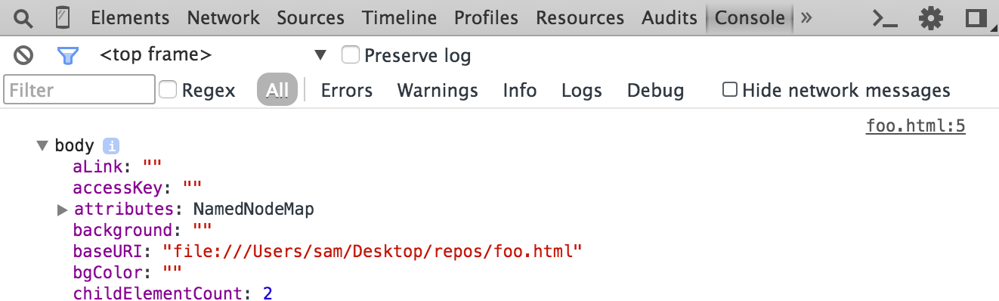
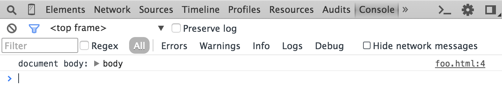
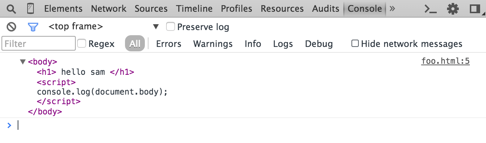

The Console API provides web applications with methods for writing information to the console, creating JavaScript profiles, and initiating a debugging session.
If the specified expression is false, the message is written to the console along with a stack trace. In the following example, the assert message is written to the console only when the document contains fewer than five child nodes:
var list = document.querySelector('#myList');
console.assert(list.childNodes.length < 10, "List item count is > 10");

Clears the console.
console.clear();
Also see Clearing the console.
Writes the the number of times that count() has been invoked at the same line and with the same label.
In the following example count() is invoked each time the login() function is invoked.
function login(user) {
console.count("Login called");
// login() code...
}
In this example, count() is invoked with different labels, each of which is incremented separately.
function login(user) {
console.count("Login called for user '" + user + "'");
// login() code...
}

This method is identical to console.log().
Prints a JavaScript representation of the specified object. If the object being logged is an HTML element, then the properties of its DOM representation are displayed, as shown below:
console.dir(document.body);

You can also use the object formatter (%O) in a console.log() statement to print out an element's JavaScript properties:
console.log("document body: %O", document.body);

Calling console.dir() on a JavaScript object is equivalent to calling console.log() on the same object—they both print out the object's JavaScript properites in a tree format.
Compare this with the behavior of console.log(), which displays the element in an XML format as it would appear in the Elements panel:
console.log(document.body);

Prints an XML representation of the specified object, as it would appear in the Elements panel. For HTML elements, calling this method is equivalent to calling console.log().
var list = document.querySelector("#myList");
console.dirxml();
%O is a shortcut for dir %o acts either as dir or dirxml depending on the object type (non-dom or dom)
Similar to console.log(), console.error() and also includes a stack trace from where the method was called.
function connectToServer() {
var errorCode = 1;
if (errorCode) {
console.error("Error: %s (%i)", "Server is not responding", 500);
}
}
connectToServer();

Starts a new logging group with an optional title. All console output that occurs after calling this method and calling console.groupEnd() appears in the same visual group.
console.group("Authenticating user '%s'", user);
console.log("User authenticated");
console.groupEnd();

You can also nest groups:
// New group for authentication:
console.group("Authenticating user '%s'", user);
// later...
console.log("User authenticated", user);
// A nested group for authorization:
console.group("Authorizing user '%s'", user);
console.log("User authorized");
console.groupEnd();
console.groupEnd();

Creates a new logging group that is initially collapsed instead of open, as with console.group().
console.groupCollapsed("Authenticating user '%s'", user);
console.log("User authenticated");
console.groupEnd();
console.log("A group-less log trace.");

Closes the most recently created logging group that previously created with console.group() or console.groupCollapsed(). See console.group() and console.groupCollapsed() for examples.
This method is identical to console.log().
Displays a message in the console. You pass one or more objects to this method, each of which are evaluated and concatenated into a space-delimited string. The first parameter you pass to log() may contain format specifiers, a string token composed of the percent sign (%) followed by a letter that indicates the formatting to be applied.
Dev Tools supports the following format specifiers:
Format Specifier|Description
----------------|------------
%s |Formats the value as a string.
%d or %i |Formats the value as an integer.
%f |Formats the value as a floating point value.
%o |Formats the value as an expandable DOM element (as in the Elements panel).
%O |Formats the value as an expandable JavaScript object.
%c |Formats the output string according to CSS styles you provide.
Basic example:
console.log("App started");
An example that uses string (%s) and integer (%d) format specifiers to insert the values contained by the variables userName and userPoints:
console.log("User %s has %d points", userName, userPoints);

An example of using the element formatter (%o) and object formatter (%O) on the same DOM element:
console.log("%o, %O", document.body, document.body);

The following example uses the %c format specifier to colorize the output string:
console.log("%cUser %s has %d points", "color:orange; background:blue; font-size: 16pt", userName, userPoints);

When the Chrome DevTools is open, calling this function starts a JavaScript CPU profile with an optional label.To complete the profile, call console.profileEnd(). Each profile is added to the Profiles tab.
Each profile you create with this method is added to the console.profiles[] array. Each member of the array is an object for the profile that can be stringified and sent back to the server. useful in continuous integration/remote debugging setups.
In the following example a CPU profile is started at the entry to a function that is suspected to consume excessive CPU resources, and ended when the function exits.
function processPixels() {
console.profile("Processing pixels");
// later, after processing pixels
console.profileEnd();
}
Stops the current JavaScript CPU profiling session, if one is in progress, and prints the report to the Profiles panel.
console.profileEnd()
See console.profile() for example use.
Starts a new timer with an associated label. When console.timeEnd() is called with the same label, the timer is stopped the elapsed time displayed in the Console. Timer values are accurate to the sub-millisecond.
console.time("Array initialize");
var array= new Array(1000000);
for (var i = array.length - 1; i >= 0; i--) {
array[i] = new Object();
};
console.timeEnd("Array initialize");

Note: The string you pass to the time() and timeEnd() methods must match for the timer to finish as expected.
Stops the timer with the specified label and prints the elapsed time.
For example usage, see console.time().
This method adds an event to the Timeline during a recording session. This lets you visually correlate your code generated time stamp to other events, such as screen layout and paints, that are automatically added to the Timeline.
See Marking the Timeline for an example of using console.timeStamp().
Prints a stack trace from the point where the method was called, including links to the specific lines in the JavaScript source. A counter indicates the number of times that trace() method was invoked at that point, as shown in the screen shot below.

This method is like console.log() but also displays a yellow warning icon along with the logged message.
console.warn("User limit reached! (%d)", userPoints);

The global debugger function causes Chrome to stop program execution and start a debugging session at the line where it was called. It is equivalent to setting a "manual" breakpoint in the Sources tab of Chrome DevTools.
Note: The debugger command is not a method of the console object.
In the following example the JavaScript debugger is opened when an object's brightness() function is invoked:
brightness : function() {
debugger;
var r = Math.floor(this.red*255);
var g = Math.floor(this.green*255);
var b = Math.floor(this.blue*255);
return (r * 77 + g * 150 + b * 29) >> 8;
}